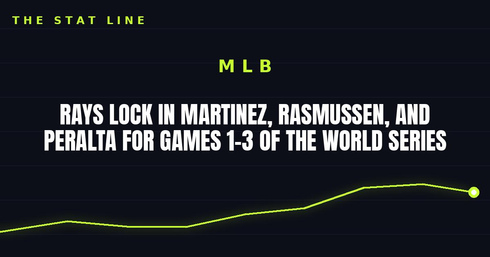

Rays Lock In Martinez, Rasmussen, and Peralta for Games 1–3 of the World Series
Kevin Cash is betting rest over momentum: Nick Martinez gets Game 1 tonight opposite Jacob Misiorowski on FOX, with Drew Rasmussen and Freddy Peralta held back for Games 2 and 3.

Disclosure: this post contains affiliate links. I earn a commission on qualifying purchases.
Kevin Cash is betting rest over momentum, holding his two heaviest ALCS arms back so the rotation is set: Nick Martinez opposite Jacob Misiorowski tonight in Game 1 at 8 p.m. ET on FOX, Drew Rasmussen gets Game 2 against Logan Henderson, and Freddy Peralta takes Game 3 at the Trop — after Cash cited the toll of their October workloads. (Milwaukee Journal Sentinel)
Why Martinez over the aces
Cash's reasoning is workload management: Rasmussen has carried a heavy October load, and Peralta's ALCS workload included a bullpen inning between starts. "When Nick pitches, we win," Cash said Thursday — and the Rays have won both of Martinez's two playoff starts this year. (theScore)
The 36-year-old is having an all-star season in his first year with the Rays, and he already beat this Brewers team once at American Family Field — two runs over six hits in a 3-2 Rays win in his first start of 2026.
The mismatch on the mound tonight
Role: Game 1 starter; Game 1 starter
2026 season: All-star campaign; 1.80 ERA, 252 Ks, 0.80 WHIP, .157 opp BA
Signature: "El Presidente," dinner host; 100+ mph fastball record pace
Odds (DraftKings): Rays +135; Brewers -155
Misiorowski led MLB in ERA, strikeouts, WHIP, and opponent average during the regular season. Martinez is the veteran steady hand. It's craft against heat. (NBC Sports)
The rest of the plan
• Game 2: Rasmussen vs. Logan Henderson
• Game 3: Peralta at the Trop
Both teams are chasing their first-ever World Series title — the Brewers' only previous appearance was 1982, the Rays' were 2008 and 2020. First pitch is 8 p.m. ET on FOX.
Watch
Source: "2026 World Series Preview: Brewers, Rays vie for FIRST title ever!" — MLB. The official league preview of the matchup: everything on the first-ever Rays-Brewers Fall Classic, with both franchises hunting their first championship.
Rep the Rays or the Crew: World Series gear at Fanatics.
Gear up: World Series merch — Rays and Brewers championship gear via Fanatics